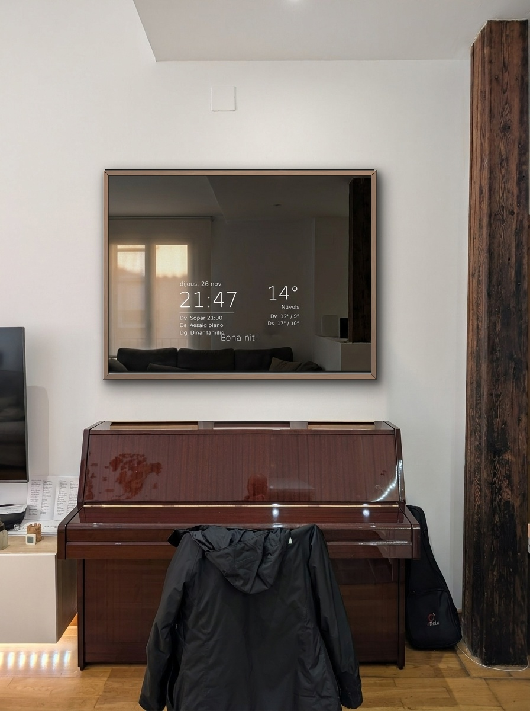

- Outer Frame
- 1230 × 930 mm
- Depth (Flush)
- 60 mm (+0 cleat)
- Oak Front Rim
- 22 mm mitered
- Visible Mirror
- 1186 × 886 mm
- Total Weight
- ≈ 26.8 kg

01Technical Drawings (Exact Millimeters)
02Wood & Panel Cut List (Take to the Wood Shop)
| Part | Material | Qty | Exact Size |
|---|---|---|---|
| Oak outer frame — top & bottom | Solid European Oak 22 × 60 mm (rabbet 10 × 52 mm)* | 2 | 1230 mm (45° mitered) |
| Oak outer frame — left & right | Solid European Oak 22 × 60 mm (rabbet 10 × 52 mm)* | 2 | 930 mm (45° mitered) |
| Structural backplate (shear panel) | Poplar plywood 9 mm (contrachapado de chopo) | 1 | 1206 × 906 mm (cut 644×383 mm monitor window) |
| Bottom shelf / stiffener | Birch plywood 15 mm | 1 | 1206 × 83 mm (notch 100×6 mm for buttons) |
| Glass stops — top | Pine/oak strip 15 × 15 mm | 1 | 1206 mm |
| Glass stops — sides | Pine/oak strip 15 × 15 mm | 2 | 808 mm |
| French cleat (wall + frame halves) | Birch plywood 15 mm (rip 145 mm strip at 45°) | 1 | 900 × 145 mm → 2× ~70 mm cleats |
| VESA hanging straps | Aluminium flat bar 30 × 3 mm | 2 | 323 mm |
| Black light-block mask | Black foam board 5 mm (cartón pluma negro) | 1 | 1176 × 808 mm |
| Crisp screen window overlay | Matte black card (cartulina negra) | 1 | 640 × 390 mm (cut 598 × 336 mm window) |
03Shopping List (Check Off as You Buy)
| Item | Qty | Notes & Drywall Specs | |
|---|---|---|---|
| Solid European Oak frame rails* | 4.6 m linear | 22 × 60 mm solid oak with 10 × 52 mm rabbet (at local carpintería/maderería). Zero-router alt: 1× 18 mm tablero alistonado de roble (2400×400) ripped to 60 mm + 8×8 mm oak lip strip. | |
| Poplar plywood 9 mm (contrachapado de chopo) | 1 sheet (1206×906 mm) | Lightweight structural shear backplate (~3.2 kg vs 7.2 kg birch!) — cut monitor window out. | |
| Birch plywood 15 mm (contrachapado abedul) | 1 offcut (~1210×250 mm) | Bottom 83 mm monitor shelf/stiffener + 900×145 mm strip ripped at 45° for the two French cleat halves. | |
| Pine or oak strip 15 × 15 mm (listón) | 2 × 2.4 m | Removable top & side glass stops. | |
| Black foam board 5 mm (cartón pluma negro) | 1 sheet 100×140 cm | Light-blocking mask behind the mirror around the monitor (art shop). | |
| Matte black card (cartulina negra) | 1 sheet 70×50 cm | Razor-clean 598 × 336 mm window overlay behind the glass. | |
| Aluminium flat bar 30 × 3 mm (pletina) | 1 m | Cut into 2× VESA straps (390 mm each), bolted to monitor M4 holes + backplate. | |
| EPDM glazing tape (10 × 2 mm) + 1 mm black felt tape | 5 m each | EPDM cushions glass on front lip; felt lines stops, shelf, and monitor bezel. | |
| Hard rubber setting blocks (100 × 8 × 3 mm, 80–90 Shore A) | 2 | Support the 16.2 kg glass bottom edge at the ¼ points (30 & 90 cm). | |
| DRYWALL (Pladur) anchors: Fischer DuoTec 10 or metal Molly M6 | 4–6 pcs | For the 900 mm wall French cleat! Hit ≥2 vertical pladur studs with stud screws + 4 DuoTec/Molly toggles (rated ≥25 kg each). | |
| Right-angle HDMI adapter + Right-angle DC power adapter | 1 each | Essential! Philips 27E2N1100L ports face straight back — keeps plugs within the 11 mm wall clearance. | |
| Screws, wood glue, matte black paint, clear matte oak oil | 1 set | 4×40 / 3.5×30 / 3×20 screws, M4×10 VESA bolts + washers, matte black spray/paint for inside, Rubio/Osmo matte clear oil to match your Disney frame oak. | |
| Electronics (if not already bought) | 1 set | Raspberry Pi 5 + active cooler + 27 W USB-C PSU + micro-HDMI cable + optional mini PIR AM312. |
04Step-by-Step Build & Drywall Hanging Guide
- 01
Test the Philips 27″ monitor first (before cutting!)
Plug in your right-angle HDMI & DC adapters and verify they project ≤ 10 mm past the rear stand box. Show a full-white image to confirm the 598 × 336 mm lit area, mark the 5 bottom buttons (122–203 mm from right) for the shelf notch, tape over the power LED, and check auto-power-on / ddcutil.
- 02
Get the wood cut & mitered
Have your local carpintería/maderería cut the four 22 × 60 mm European oak rails with the 10 × 52 mm rabbet and 45° mitered corners (or use the zero-router 18 mm oak + 8 × 8 mm glued lip alt). Have Leroy Merlin cut the 9 mm poplar backplate (1206 × 906 mm), the 15 mm bottom shelf, and rip the 900 × 145 mm French cleat lengthwise at 45°.
- 03
Glue the oak frame & finish the wood
Glue and clamp the 4 mitered oak corners squarely (check diagonals within 1–2 mm; reinforce inside corners with small hidden L-brackets or corner splines). Cut 2–3 discreet ventilation slots (120 × 12 mm) into the hidden top & bottom edges. Apply clear matte oil/varnish to the oak outside (matching your Disney frame) and paint the inside, shelf, and 9 mm backplate matte black.
- 04
Cut monitor window & dry-fit everything (NO glass yet!)
Jigsaw the 644 × 383 mm window in the 9 mm poplar backplate (giving open access to monitor ports, buttons, and cooling). Screw the 15 mm bottom shelf (notched for buttons) into the bottom oak rail + backplate. Dry-fit the monitor on the shelf, drill the two 30 × 3 mm aluminium VESA straps to connect the monitor's M4 VESA holes up to the backplate above the cutout, and test-fit the Pi 5 and right-angle cables.
- 05
Install the 1200 × 900 × 6 mm two-way glass
Two people + clean gloves on a soft blanket, oak frame face-down. Stick EPDM glazing tape around the front lip. Check which side of the glass is coated (pen-tip reflection test: on the coated side the tip touches its reflection — face coating toward the room). Lower the glass gently onto the lip and slide the two EPDM setting blocks under the bottom edge at 30 cm & 90 cm.
- 06
Lock the glass in & add the black mask
Apply 1 mm black felt to the stops and shelf. Screw the 15 × 15 mm top & side stops snug (not tight!) against the glass, then screw in the notched bottom shelf (no glue so the glass can always be removed). Lay in the 5 mm black foam-board mask + matte-black card window overlay.
- 07
Mount the monitor, Pi 5, backplate & frame cleat
Stick 1 mm felt on the monitor bezel, set it on the bottom shelf, bolt the two aluminium VESA straps to the monitor (M4 × 10) and into the 9 mm poplar backplate. Screw the 9 mm backplate around the entire inner oak perimeter every 15 cm (this turns the frame into a zero-sag shear box!). Screw and glue the upper 45° French cleat half flat onto the backplate (recessed flush inside the 19 mm rear pocket!).
- 08
Hang safely on the drywall (pladur) above the piano
Mark the wall cleat height so the frame bottom lands +22 cm above your 102.5 cm piano (frame: 124.5–217.5 cm, screen: 135.9–169.5 cm). Use a magnet/stud finder to locate the vertical pladur studs (montantes). Level and screw the 900 mm wall French cleat into ≥2 studs PLUS 4× Fischer DuoTec 10 or metal Molly toggles across the cleat. Two people lift the ~26 kg mirror straight onto the cleat (0 mm wall gap!), route the thin power cord down behind the piano (or up to the junction box), and add 1 small anti-lift screw at the bottom edge.